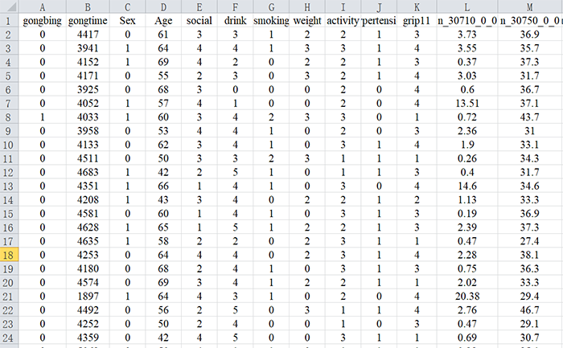
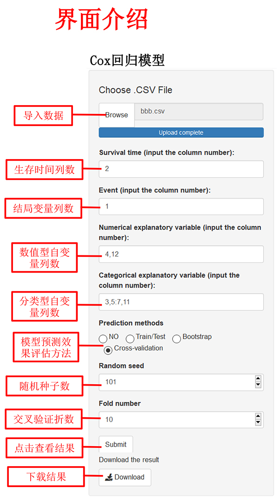
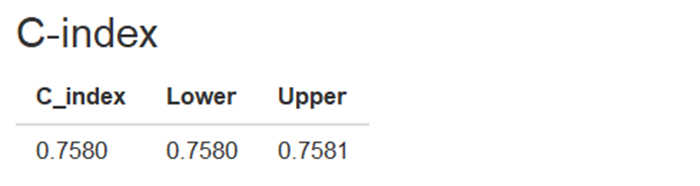

| 一、数据格式 | |
|  |  |
| 注： 1、数据格式为“.csv”，数据中避免中文、空格或特殊字符 2、数据变量名必须为英文、阿拉伯数字或下划线的组合 3、自变量（Explanatory variable）可以输入多列，以英文状态下的逗号或冒号分隔，如：2,3,4或2:4 4、导入数据后，各变量所对应的列数可在输出界面显示和查询 |
|
| 二、输出结果展示 | |
| 输出结果包括偏回归系数、标准误、卡方值、P值、HR值及其可信区间。 示例如下： |
|
| 如果需要测试模型的预测效果，则会输出其相应的测试方法预测的C指数值及其可信区间 示例如下： |
|
|  |